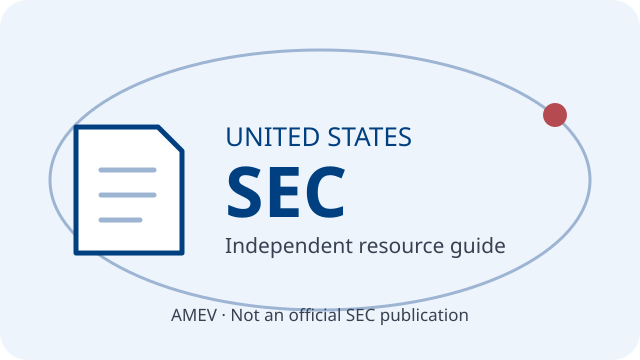

United States of America · SEC orbital guide
- Federal authority
- U.S. Securities and Exchange Commission (SEC)
- Official website
- www.sec.gov
- Investor education
- Investor.gov
- Scope
- The SEC oversees U.S. securities markets, securities disclosures and regulated securities firms. It is not the sole U.S. financial regulator: state securities regulators, the CFTC, banking regulators and FINRA have distinct roles.
This independent AMEV page is not published, certified or endorsed by the SEC. It is not investment advice. The original thumbnail is not an official SEC seal. Official links are provided for information, not as a guarantee of safety or recovery.
A. Investor alerts and bulletins
SEC investor alerts and bulletins
Read about common fraud tactics, investment risks and ways to protect yourself before sending money.
B. Securities oversight and enforcement
SEC enforcement and litigation resources
Review official proceedings and orders. An allegation is not a final finding; consult the underlying document and case status.
C. Registration checks and company filings
Investment Adviser Public Disclosure (IAPD) provides information on SEC- and state-registered investment advisers, certain exempt reporting advisers and investment adviser representatives.
Investor.gov: checking investment professionals explains registration and background checks, including broker checks through FINRA BrokerCheck.
Search EDGAR company filings. A filing or registration does not mean the SEC approves an investment or guarantees its safety. Compare identities and contact details to guard against impersonation.
D. Unregistered entities and impersonators
Public Alert: Unregistered Soliciting Entities (PAUSE)
Check SEC alerts about soliciting entities and impersonators. This is not a complete list: absence from an alert is not proof of registration or legitimacy.
E. Reports and publications
Consult official reports for the SEC's activities and policy context; check publication dates and coverage.
F. Market data and research
Use official datasets and EDGAR disclosures, noting their definitions, reporting periods and limitations.
G. Fraud, phishing and enforcement tips
Submit a tip, complaint or referral (TCR) about a possible securities-law violation
Use the SEC's official reporting instructions. TCR is an enforcement channel, distinct from an investor assistance complaint. Whistleblower award eligibility has separate requirements; consult the SEC's instructions before submitting.
Navigate directly to official sites, verify identities independently and never share passwords or access codes with unsolicited callers. Beware of anyone demanding an upfront payment to recover lost funds.
H. Investor assistance and complaints
SEC investor complaint and assistance channel for problems involving investment accounts, financial professionals or securities transactions.
Keep records of communications and transactions. SEC investor assistance is not a court or arbitration service and cannot guarantee compensation. For suspected securities-law violations, use the separate TCR channel above; other regulators may handle matters outside SEC jurisdiction.